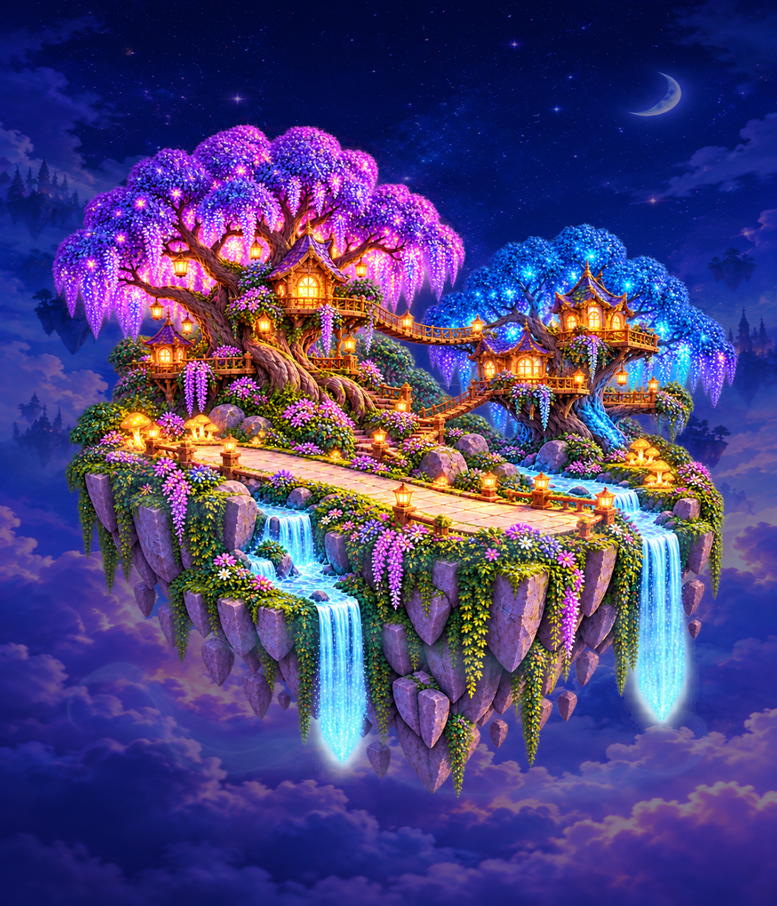
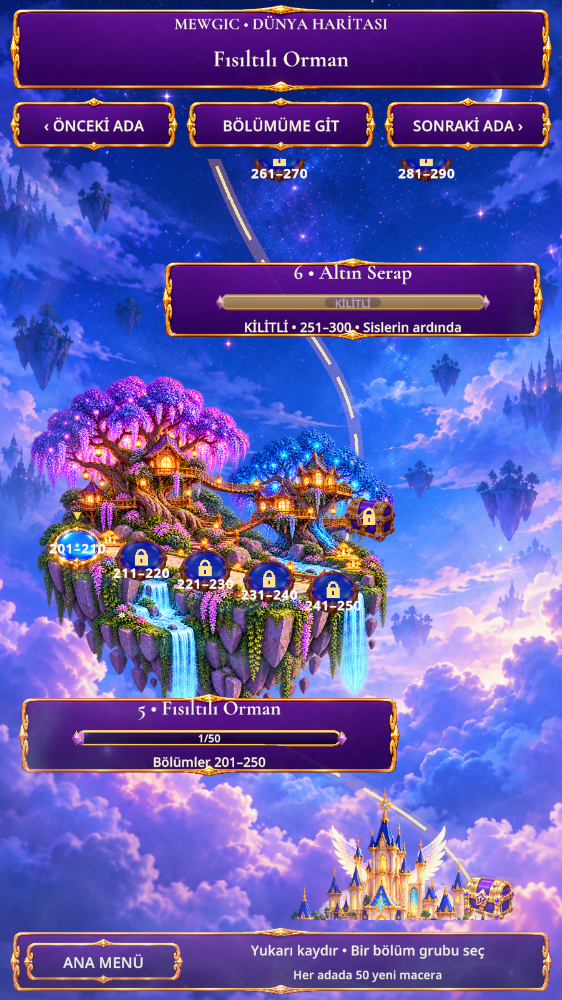

Yeni beşinci adanın büyük Unity önizlemesi ve gerçek harita çıktısı. Referans; onaylı yumuşak 3D illüstrasyon, mor-mavi ışık, sıcak pencereler, şelale ve uçan kaya derinliği bakımından karşılaştırılır. İlk dört adanın sanatı ve mevcut grup düğümlü harita düzeni korunur.


Ada ayrıntısı ve malzeme/ışık dili ilk dört adaya uyumlu. Yeni adada taş/kaya kütlesi ve taç silueti tam kadrajda; alpha kenarı kaynak denetiminde tuvale değmiyor. Mor ve mavi ağaçlar birbirinden okunuyor; mimari ve altın mantarlar küçük ölçekte seçiliyor. Hareketli sis %6–9 alpha ile kontrollü; su/ışık ayrı efekt katmanları. Düğümler ve sandık görsele basılmadı.
Mevcut haritanın beş grup düğümü, yatay grup sırası, büyük mor-altın paneller ve ada aralıkları referanstaki tekil bölüm yolundan farklıdır. Bu part yalnız beşinci adayı ekler. Bütün statik mimari/bitki/dekor ayrı düzenlenebilir Blender parçaları değildir; seçilen yüksek kaliteli 2D sanat tabanda bake edilmiştir. Fiziksel cihaz FPS/RAM/termal kabulü yapılmadı.
9:19.5 · 9:20 / Safe Area · 241–250 seçicisi · Hareket A · Hareket B